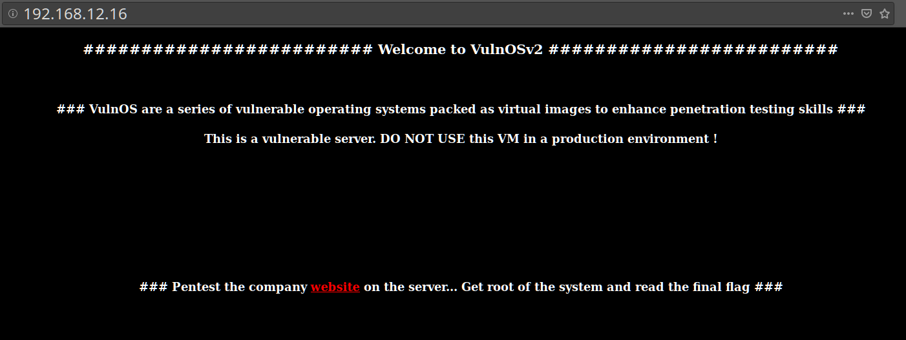
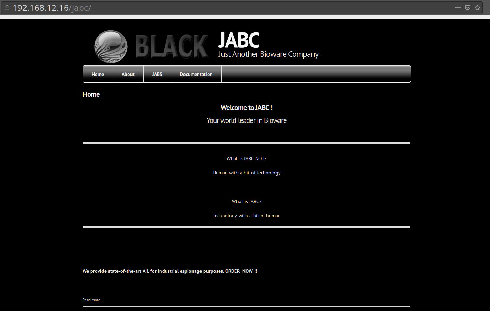
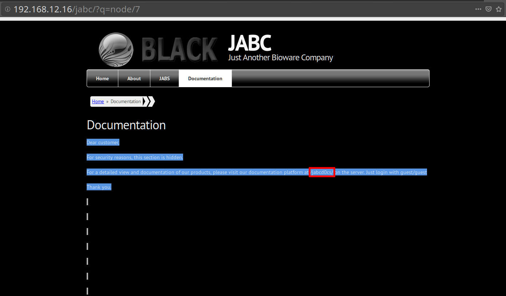
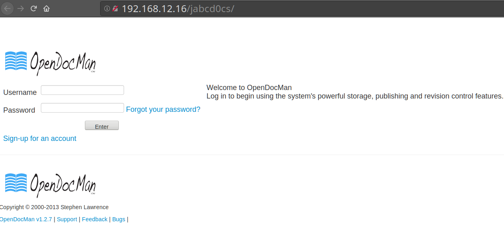
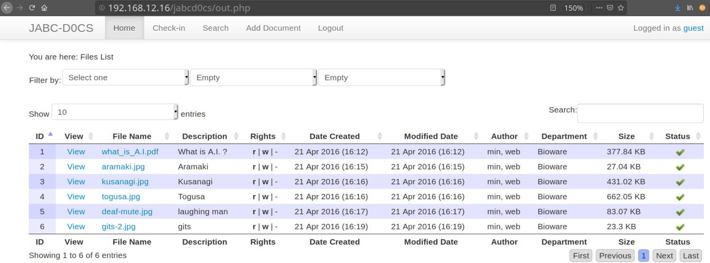

3. Browse to the website
Enter the IP address of the machine in our browser i.e. 192.168.12.16.

There's a link “website” that takes us to another page.

Check all pages one by one and suddenly we got something useful in our hands from Documentation Page located at http://192.168.12.16/jabc/?q=node/7 “Documentation”
You can see that page looks like it doesn't have any content, but if you select all you'll see some text.

Now we’ve found one more hidden directory http://192.168.12.16/jabcd0cs/ which shows a login panel of entitled OpenDocMan and asking for login details to enter. Now here you can try some input validation attacks like SQL Injection, XSS etc.
Enter at that direction:

We can even log in as a guest with guest:guest credentials.

 Index
Index